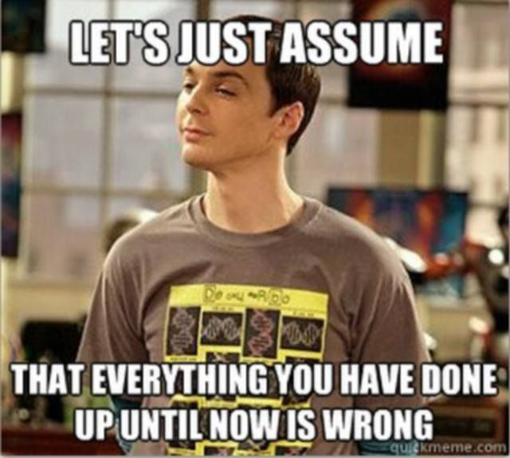

 Last week, I broke my streak due to a mismanaged schedule. However, I’ll try to write two posts this weekend. But first, let’s start with the first one.
As I’ve mentioned in previous blogs, I was working on a project in a completely new field. I was surrounded by people much smarter than me, and it was humbling. However, the last month threw me off track from my goal of having an orderly life—a perfect routine of morning workouts, productive days, and evening reading. To be fair, I managed 1 and 2, but 3 just didn’t happen.
I think I faced mental fatigue after working during the day—maybe because of the illusion that I had done something meaningful—which left me unable to muster the energy to read at night. The past month required some mechanical contributions from my end, but somehow, we managed to catch up to the planned timeline and wrap it up on time.
Earlier this week, the topic of author contributions came up. The professor thought I contributed equally to my senior. But honestly, as much as I tried in the last three months, I think I couldn’t match his level. Mechanically, I delivered. Intellectually, I was catching up. I confronted my feelings by crediting my senior and acknowledging that he deserved higher recognition.
Still, I felt bad—like I was discrediting myself. This means my PhD research plan is still where it started. I kind of saw this coming, though. I got too attached to the project, so when we submitted it, I was sad it was over.
But looking back, I think the attachment had a purpose. It taught me something valuable in the very first semester of my PhD. The project isn’t over yet, but if I don’t note down the lessons now, they’ll fade into the ether. So here it goes.
A Note to Future Aditya (Hopefully reading this as PhD candidate) 🔗
Hey, Aditya. If you’re reading this, chances are life feels like a mess again, and you’re desperately looking for something to bring back order. Well, here’s the lesson you learned in your first semester of PhD—straight from past you to future you.
1. Chaos needs order, not vibes. 🔗
Life’s messy, but problems love structure. Always start by writing things down. Formalize the problem. Yes, it feels tedious. No, it’s not optional. If you don’t, the problem will disappear into the Bermuda Triangle of your brain, taking the solution with it. Once the problem is clear, list out related problems and existing solutions. Then—this part is crucial—organize them by priority.
Always keep in mind that everything eventually has to go in an academic manuscript. Keep track of each section, listing key points for that section under the heading every now and then. Missing pieces suck, and what’s the point of a research project if it’s just filled with loopholes you’re trying to hide?
2. Time doesn’t equal greatness. 🔗
Here’s the thing: Great things take time, but taking your sweet time doesn’t guarantee the result will be groundbreaking. Sometimes, what you’re building isn’t even worth the time you’re pouring into it. Step back regularly and ask:
- Is this a real problem?
- Will my solution actually solve it?
Being stuck in the process can make you blind to these questions. Pause. Reflect. Move on if needed. No one’s handing out trophies for effort.
3. Fear feeds procrastination. Starve it. 🔗
Scared of something? Don’t delay. The problem won’t magically solve itself; it’ll just fester. And by the time you confront it, you’ll probably have made it worse in your head. Yes, figuring out what doesn’t work takes time. But the right approach is always the shortest. Keep looking for it.
4. Don’t delegate your brainchild. 🔗
If it’s your idea, own it. Completely. Don’t rely on others to fill in the gaps or do your chores, even if the gaps feel endless. Here’s why:
- It avoids you resenting others for expecting credit for your idea.
- It saves others from resenting you for being credited less than you think they deserve.
Teamwork is great; delegating your work is not. Seek collaboration, not help from others.
5. Academia is a confidence game. Play it. 🔗
Believe you’re the best. Yes, it feels arrogant. Yes, you’ll feel like an imposter. Do it anyway. You won’t survive this field by doubting yourself.
What’s the worst that can happen? You’re wrong? People laugh? Everyone gets it wrong sometimes (for you, probably most times). But if you don’t back yourself, no one else will. Ruthless environments demand ruthless confidence. Stay grounded, sure. Just don’t bury yourself in humility.
Signing off,
Aditya Ranjan Jha